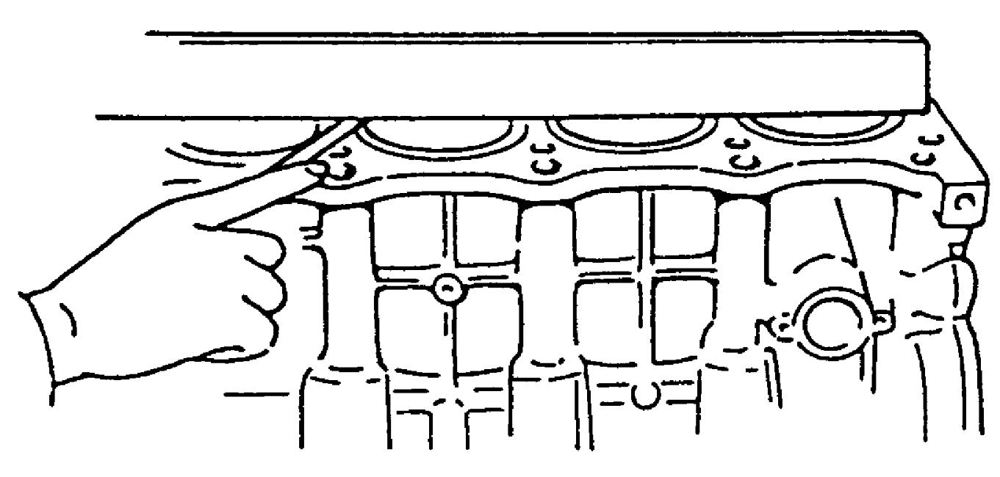
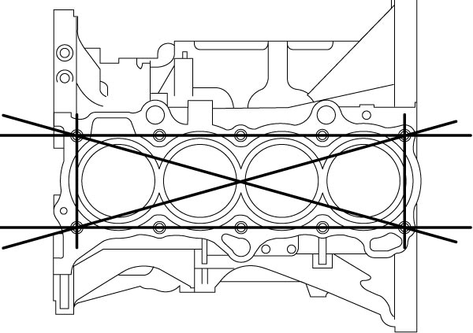
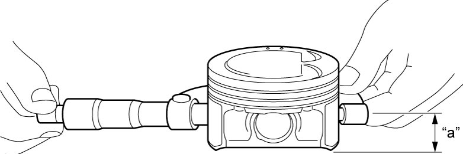
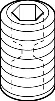

1D
| Cylinder Block Inspection |
Distortion of Gasket Surface
Using straightedge and feeler gauge, check gasket surface for distortion. If flatness exceeds its limit, repair it.
If repair is not possible, replace cylinder block.
Cylinder block flatness
Limit: 0.03 mm (0.0012 in.)

 "Expand image")

 "Expand image")
Honing or Reboring Cylinder
1)When any cylinder needs reboring, all other cylinders must also be rebored at the same time.
2)Select oversize piston according to amount of cylinder wear.
Oversize piston specification
Oversize (0.50 mm (0.0197 in.)) (used piston): 78.469 – 78.481 mm (3.0894 – 3.0898 in.)
Oversize (0.50 mm (0.0197 in.)) (new piston with coating): 78.485 – 78.497 mm (3.0900 – 3.0904 in.)
3)Using micrometer, measure piston diameter.

Measurement position for piston diameter
“a”: 12.0 mm (0.472 in.)

 "Expand image")
4)Rebore and hone cylinder to the following dimension.
NOTE:
Before reboring, install all main bearing caps in place and tighten to specification to avoid distortion of bearing bores.
Cylinder bore diameter to be rebored
Oversize (0.50 mm (0.0197 in.)): 78.500 – 78.514 mm (3.0906 – 3.0911 in.)
5)Measure piston clearance after honing.
Piston clearance
0.003 – 0.029 mm (0.0001 – 0.0011 in.)
Venturi Plug Inspection
Check that venturi plug passage is not clogged.
If venturi plug passage is clogged, clean or replace venturi plug.

 "Expand image")